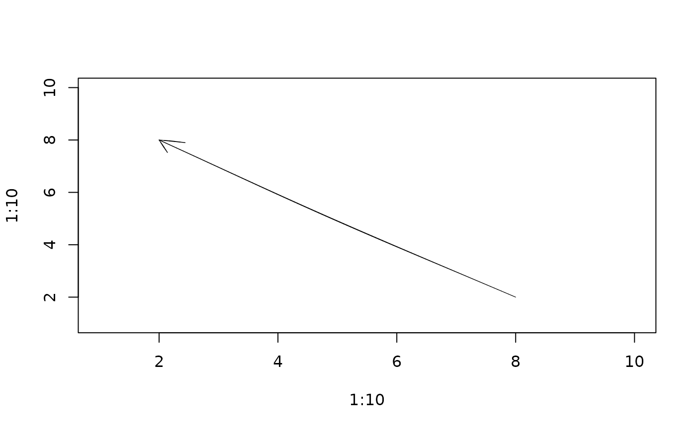

Compute or draw rough arrows
Usage
rough_arrows(x0, y0, x1, y1, length = 0.25, angle = 30, code = 2, hand = NULL)
draw_rough_arrows(
x0,
y0,
x1,
y1,
length = 0.25,
angle = 30,
code = 2,
hand = NULL,
...
)Arguments
- x0, y0
Arrow starts.
- x1, y1
Arrow ends.
- length
Arrowhead length in inches, as in
graphics::arrows().- angle
Arrowhead angle in degrees.
- code
Integer code indicating where heads are drawn:
0for none,1at the start,2at the end,3at both ends.- hand
Hand-drawn geometry settings created with
hand().- ...
Graphics parameters passed to
graphics::lines().
Value
A list with x, y, and id components describing roughened
polyline geometry for arrow shafts and heads.
See also
Other rough drawing helpers:
rough_lines(),
rough_points(),
rough_polygons(),
rough_polypath(),
rough_rect(),
rough_segments()
Examples
plot(1:10, 1:10, type = "n")
rough_arrows(2, 2, 8, 8, hand = hand(multi_stroke = 2))
#> $x
#> [1] 2.000000 2.059406 2.118812 2.178218 2.237624 2.297030 2.356436 2.415842
#> [9] 2.475248 2.534653 2.594059 2.653465 2.712871 2.772277 2.831683 2.891089
#> [17] 2.950495 3.009901 3.069307 3.128713 3.188119 3.247525 3.306931 3.366337
#> [25] 3.425743 3.485149 3.544554 3.603960 3.663366 3.722772 3.782178 3.841584
#> [33] 3.900990 3.960396 4.019802 4.079208 4.138614 4.198020 4.257426 4.316832
#> [41] 4.376238 4.435644 4.495050 4.554455 4.613861 4.673267 4.732673 4.792079
#> [49] 4.851485 4.910891 4.970297 5.029703 5.089109 5.148515 5.207921 5.267327
#> [57] 5.326733 5.386139 5.445545 5.504950 5.564356 5.623762 5.683168 5.742574
#> [65] 5.801980 5.861386 5.920792 5.980198 6.039604 6.099010 6.158416 6.217822
#> [73] 6.277228 6.336634 6.396040 6.455446 6.514851 6.574257 6.633663 6.693069
#> [81] 6.752475 6.811881 6.871287 6.930693 6.990099 7.049505 7.108911 7.168317
#> [89] 7.227723 7.287129 7.346535 7.405941 7.465347 7.524752 7.584158 7.643564
#> [97] 7.702970 7.762376 7.821782 7.881188 7.940594 8.000000 8.000000 7.912288
#> [105] 7.824575 7.736863 7.649150 7.561438 8.000000 7.971807 7.943614 7.915421
#> [113] 7.887227 7.859034
#>
#> $y
#> [1] 2.000000 2.059406 2.118812 2.178218 2.237624 2.297030 2.356436 2.415842
#> [9] 2.475248 2.534653 2.594059 2.653465 2.712871 2.772277 2.831683 2.891089
#> [17] 2.950495 3.009901 3.069307 3.128713 3.188119 3.247525 3.306931 3.366337
#> [25] 3.425743 3.485149 3.544554 3.603960 3.663366 3.722772 3.782178 3.841584
#> [33] 3.900990 3.960396 4.019802 4.079208 4.138614 4.198020 4.257426 4.316832
#> [41] 4.376238 4.435644 4.495050 4.554455 4.613861 4.673267 4.732673 4.792079
#> [49] 4.851485 4.910891 4.970297 5.029703 5.089109 5.148515 5.207921 5.267327
#> [57] 5.326733 5.386139 5.445545 5.504950 5.564356 5.623762 5.683168 5.742574
#> [65] 5.801980 5.861386 5.920792 5.980198 6.039604 6.099010 6.158416 6.217822
#> [73] 6.277228 6.336634 6.396040 6.455446 6.514851 6.574257 6.633663 6.693069
#> [81] 6.752475 6.811881 6.871287 6.930693 6.990099 7.049505 7.108911 7.168317
#> [89] 7.227723 7.287129 7.346535 7.405941 7.465347 7.524752 7.584158 7.643564
#> [97] 7.702970 7.762376 7.821782 7.881188 7.940594 8.000000 8.000000 7.979666
#> [105] 7.959331 7.938997 7.918662 7.898328 8.000000 7.904429 7.808858 7.713287
#> [113] 7.617715 7.522144
#>
#> $id
#> [1] 1 1 1 1 1 1 1 1 1 1 1 1 1 1 1 1 1 1 1 1 1 1 1 1 1 1 1 1 1 1 1 1 1 1 1 1 1
#> [38] 1 1 1 1 1 1 1 1 1 1 1 1 1 1 1 1 1 1 1 1 1 1 1 1 1 1 1 1 1 1 1 1 1 1 1 1 1
#> [75] 1 1 1 1 1 1 1 1 1 1 1 1 1 1 1 1 1 1 1 1 1 1 1 1 1 1 1 1 2 2 2 2 2 2 3 3 3
#> [112] 3 3 3
#>
plot(1:10, 1:10, type = "n")
draw_rough_arrows(2, 2, 8, 8, lwd = 2)
draw_rough_arrows(8, 2, 2, 8, code = 3, hand = hand(multi_stroke = 2))
